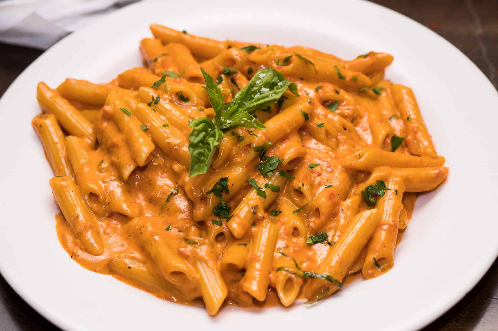

Penne Alla Vodka

30 minutes is all it takes to make the most creamiest tomato sauce you'll ever taste.
Ingredients
- 1 box penne pasta
- 1/2 medium white onion chopped
- 1 can tomato sauce 15 oz
- 2-3 cloves garlic chopped
- 1 cup vodka
- 1 cup heavy cream
- 1-2 tbsp flour
- 1-2 tbsp water
- 3/4 cup freshly grated parmesan cheese
- 2 tbsp butter
- Red pepper chili flakes to your liking (you can omit)
- Salt & pepper to taste
- Parsley for garnish
Steps
- Make penne pasta according to directions on box.
- Heat medium sauce pan with butter until melted over medium heat.
- Add garlic, onions & red pepper chili flakes. Cook until onion is translucent.
- Add vodka and let it cook/simmer for about 10 mins until reduced about half.
- Add tomato sauce and stir. Bring to a simmer.
- Lower heat to medium-low. Add 3/4 cup of heavy cream and stir. Bring to simmer.
- While waiting for sauce to simmer. In a bowl mix the flour, remaining of heavy cream (1/4 cup) and water in a bowl and whisk well. Then add to the sauce.
- Add 1/2 cup of freshly grated parmesan cheese. Then add salt and pepper to taste.
- Serve over penne pasta and garnish with remaining parmesan cheese and parsley. Enjoy!